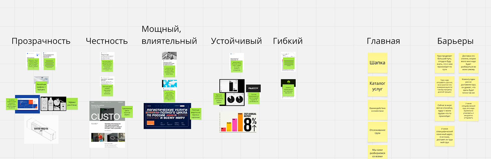

Трансатлантик
Эмоциональный сайт-визитка для компании в сфере международной логистики
Роль
UX/UI-дизайнер
Задизайнено в
JetStyle, 2022–2023
Задача
Основные клиенты Трансатлантика приходят через прямое общение, поэтому сайту не нужно было работать как классическому продающему лендингу. Его задача — эффектно представить компанию и показать, что за ней стоит современная и сильная команда.
Нужно было сделать не просто информативный корпоративный сайт, а эмоциональную диджитал-визитку с вау-эффектом.
Что я делал
Я был единственным UX/UI-дизайнером проекта. Вместе с заказчиком мы собрали в Miro карту эмоций: подбирали прилагательные, референсы и антиреференсы, обсуждали, каким должен ощущаться сайт и какое впечатление он должен оставлять.
На основе этого я разработал структуру, визуальную концепцию и интерфейсные механики. Работал вместе с арт-директором и 3D-дизайнером, продумывал сценарии движения, собирал анимации в After Effects, показывал их заказчику и дорабатывал после обсуждений.
Результат
Получился выразительный сайт-визитка, который передаёт масштаб и характер компании через визуал, 3D и движение. Заказчик был очень доволен выбранным направлением и тем, как дизайн передаёт образ Трансатлантика.
